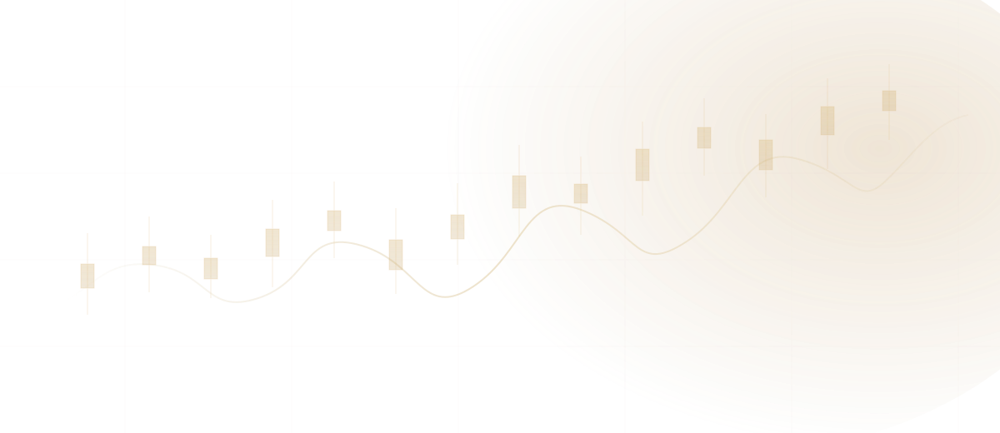

01 / 08 — UN CAMINO CON MÉTODODESLIZA PARA EXPLORAR
9:41● ◔ ▰
JX
XAUUSDOro / Dólar
✦
GRÁFICO ILUSTRATIVO
M15H1H4D1
OPERACIONES ABIERTASSIMULACIÓN
XAUUSD Compra+$12.40
XAUUSD Compra+$6.20
RESULTADO TOTAL NO ES REAL+$18.60
ANÁLISIS · PROCESO · DISCIPLINA

02 — PRIMERO, LO ESENCIAL
¿Qué estrading?
El trading consiste en analizar los mercados financieros y aprovechar los movimientos de los precios para buscar oportunidades de compra o venta.
No se trata de adivinar qué hará el mercado, sino de aprender a interpretar su comportamiento, identificar oportunidades y tomar decisiones con una estrategia y una adecuada gestión del riesgo.
Aprendizaje individual, análisis en comunidad y acompañamiento para revisar tu proceso.
01 / ACOMPAÑAMIENTO INDIVIDUAL4 SEMANAS
Mentoría personalizada
Un proceso individual para aprender, practicar y construir criterio propio.
$90USD / 4 semanas
EL RECORRIDO
8 clases individuales durante las primeras 2 semanas
Estrategia, metodología y gestión del riesgo
Práctica guiada y acompañamiento individual
Semanas 3 y 4 de práctica autónoma
Acceso a Trading Room Pro y revisión semanal
02 / ANÁLISIS + REVISIÓNMENSUAL
Trading Room Pro
$55USD / mes
Análisis de XAUUSD en sesión asiática y Nueva York
Gráficos marcados, escenarios y zonas de interés
Grupo privado
Reunión semanal para revisar resultados y fortalecer el análisis
03 / ANÁLISIS + COMUNIDADMENSUAL
Trading Room
$30USD / mes
Análisis de XAUUSD en sesión asiática y Nueva York
Gráficos marcados, escenarios y zonas de interés
Grupo privado
Acceso al análisis y la comunidad. No incluye reunión semanal de revisión.
El trading implica riesgo y no garantiza resultados.
04 — MENTORÍA PERSONALIZADA
¿Qué vas a aprender?
Un recorrido claro para comprender, analizar y ejecutar con criterio propio.
ETAPA01
COMPRENDE
Entiende cómo funciona el trading.
Conoce el mercado, el oro y las herramientas que necesitas para empezar.
ETAPA02
ANALIZA
Aprende a leer el mercado.
Identifica tendencias, zonas importantes y oportunidades, entendiendo cuándo operar y cuándo esperar.
ETAPA03
EJECUTA
Opera con criterio y disciplina.
Lleva lo aprendido a la práctica, gestiona tu riesgo y construye tu propio proceso de trading.
05 — UNA POSIBILIDAD, NO UNA PROMESA
El trading puede abrir la posibilidad de un camino propio.
El trading te permite desarrollar una actividad con mayor flexibilidad, tomar tus propias decisiones y construir un camino en el que tu tiempo, tu lugar de trabajo y tu crecimiento dependan de ti, de tu preparación y de tu disciplina.
01TIEMPOOrganízalo a tu manera.La posibilidad de gestionar tu tiempo y desarrollar tu actividad bajo tus propias condiciones.
02LUGAROpera desde donde quieras.Desarrolla tu actividad desde cualquier lugar del mundo con conexión a internet y las herramientas necesarias.
03INDEPENDENCIAConstruye tu propio camino.Aprende a tomar tus propias decisiones y trabaja por una independencia construida con criterio, disciplina y responsabilidad.
XAUUSD es un mercado en dólares. La operativa no requiere inventario, compradores ni proveedores; sí requiere capital, aprendizaje y asumir el riesgo del mercado.
LA LIBERTAD NO ES UN DESTINO.
Es la posibilidad de elegir cómo vivir tu vida.
EDUCACIÓN · NO PROMESASEL RIESGO SIEMPRE EXISTE
06 — FILOSOFÍA
NO SE TRATA DE ADIVINAR EL MERCADO. SE TRATA DE ENTENDERLO.
Cada movimiento tiene un contexto. Aprender a leerlo, esperar el momento adecuado y tomar decisiones con criterio es lo que diferencia operar por impulso de operar con una metodología.
01Gestión del riesgoProteger tu capital es más importante que perseguir una ganancia. Ninguna operación vale poner en riesgo todo el proceso.
02DisciplinaSeguir tu plan no es opcional. No improvises ni negocies tus propias reglas.
03PacienciaEsperar una oportunidad real también es parte de operar.
ENTENDER → ESPERAR → DECIDIR
JUAN XAUUSD
APRENDER · PROBAR ·×REFINAR · REPETIR ·
07 — SOBRE JUAN
NO TUVE UN MENTOR. CONSTRUÍ MI PROPIO CAMINO.
Comencé en el trading completamente solo. No tuve un mentor que me guiara, así que mi aprendizaje fue a través de la práctica, la investigación y, sobre todo, de cometer errores.
Durante este proceso probé diferentes estrategias, indicadores y conceptos. Aprendí viendo videos, leyendo foros, estudiando el mercado y cuestionando constantemente mis propias decisiones.
No fue un camino rápido. Tuve que aprender a hacer autocrítica, reconocer qué no funcionaba, corregirlo y mejorar continuamente, hasta conseguir definir mis propias reglas y construir un sistema de trading.
Hoy llevo 3 años en este camino y 2 años siendo rentable. Todo lo que he construido ha sido resultado de un proceso de aprendizaje, disciplina, práctica y evolución constante.
Por eso, hoy quiero compartir lo que he aprendido. No para que otros tengan que recorrer exactamente el mismo camino que yo, sino para que puedan aprender con una guía, evitar errores innecesarios y construir su propio criterio en el mercado.
3 años en este camino 2 años siendo rentable
NO SE TRATA DE SEGUIR MIS PASOS. SE TRATA DE QUE APRENDAS A CONSTRUIR LOS TUYOS.
08 — TU PRÓXIMO PASO
EL CRITERIO SE CONSTRUYE
TU CAMINO EN EL TRADING COMIENZA AQUÍ.
Construye una base, desarrolla tu criterio y aprende a operar con una metodología.